Lateral Repairs manufactures CIPP liners and supplies complete no-dig solutions for the trenchless rehabilitation of pipe and sewer networks — engineered in Tauragė, Lithuania and trusted across the globe since 2006.
From our production facility in Lithuania, we develop and manufacture high-quality felt liners for cured-in-place pipe (CIPP) applications, complemented by resin systems, seals, robotic cutters and the supporting components contractors need for trenchless rehabilitation of pipeline infrastructure.
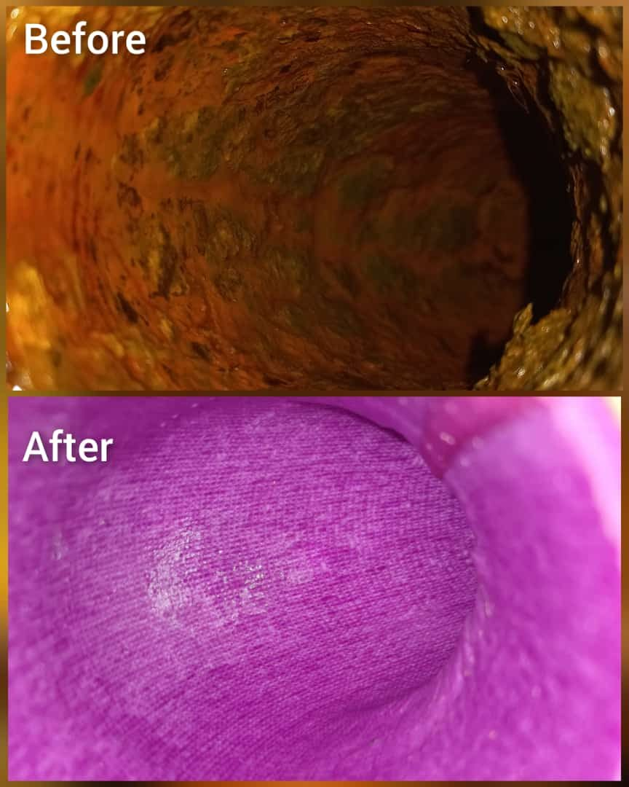
A complete portfolio of CIPP liners — from house connections to large-diameter mains — manufactured to exact wall thicknesses and paired with the right resin for the job.
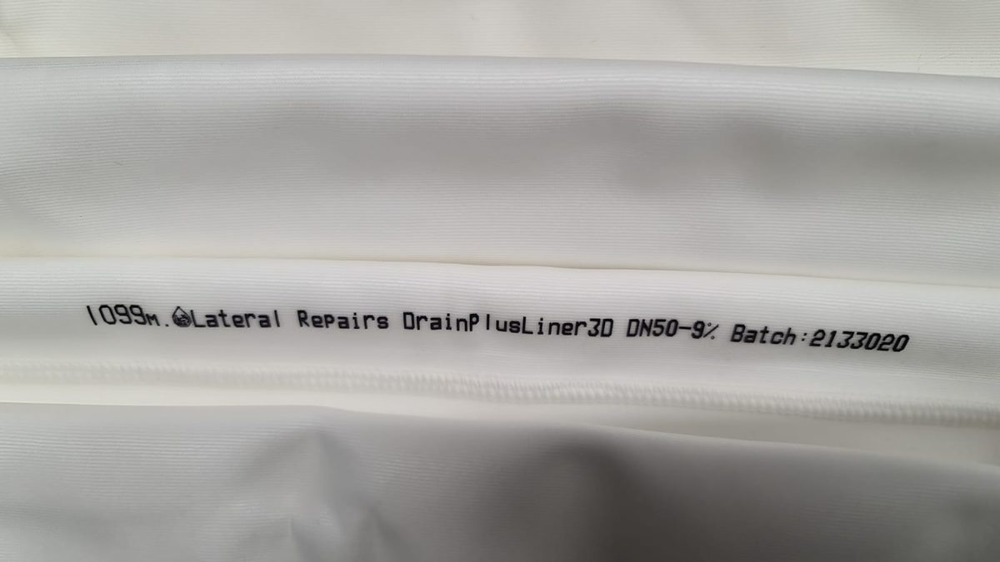
Drain & lateral lines1 PDFMULTIline FLEXThe most flexible liner in the range — negotiates 90° bends and the small diameters typical of house connections, from DN 30 upwards.View details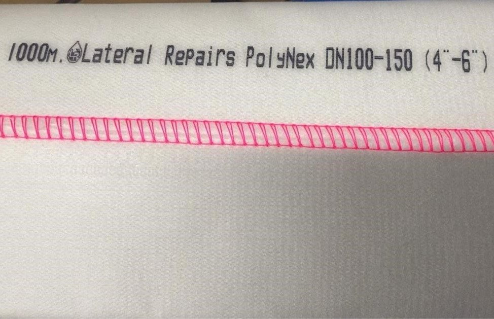
Everyday sewer & pipe1 PDFMULTIline COREThe dependable all-rounder for standard sewer and pipe rehabilitation, with a higher heat resistance than FLEX and the same 90° bend capability.View details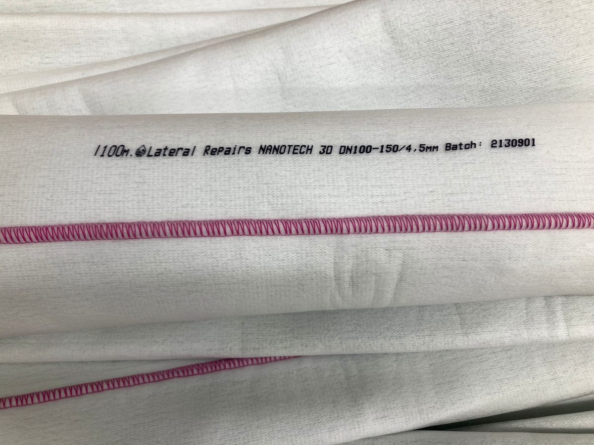
Advanced technology1 PDFMULTIline PRO 4.0 mmTPU-coated multi-knitted liner for demanding, high-specification work — up to DN 300 while still negotiating 90° bends.View detailsAdvanced technology1 PDFMULTIline PRO 4.5 mmThe thicker-walled PRO for the same DN range — more structural reserve where the host pipe is badly degraded.View details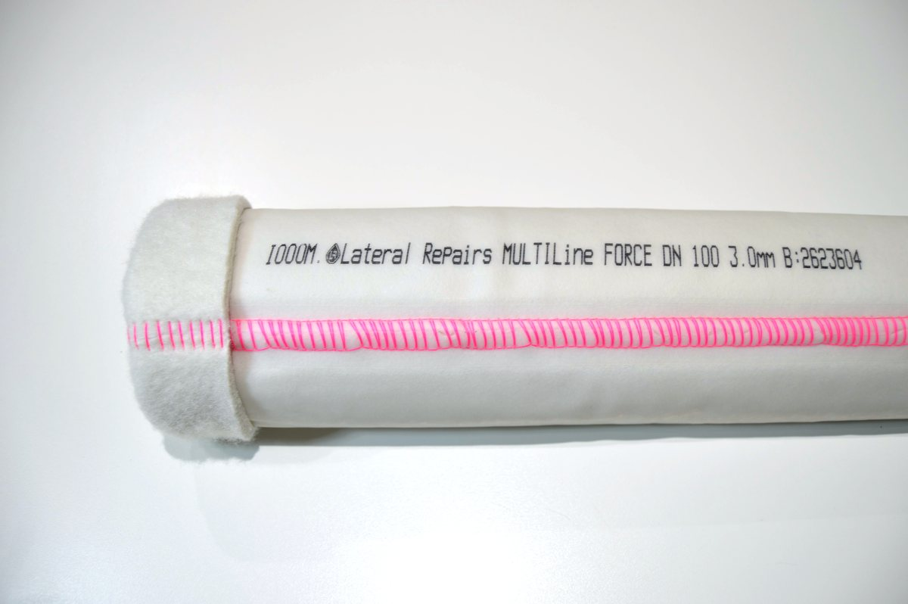
Structural rehabilitation1 PDFMULTIline FORCEFilament-reinforced liner rated to 100 °C — the choice when the new pipe has to carry the load itself.View detailsLarge diameter1 PDFMULTIline FORCE RFThe heavy-duty FORCE: a 4.50 mm wall and a heavier textile, reaching DN 600 for mains and manhole-to-manhole runs.View detailsUV curing1 PDFMULTIline FORCE UVReinforced liner with a TPU coating built for UV light-train curing — the crew controls exactly when the reline sets, up to DN 600.View detailsLateral connections1 PDFConnection LinersRestores lateral and branch connections at 45°, 90° and 180° from DN 50 to DN 300 — supplied stitched and sealed, or stitched only.View details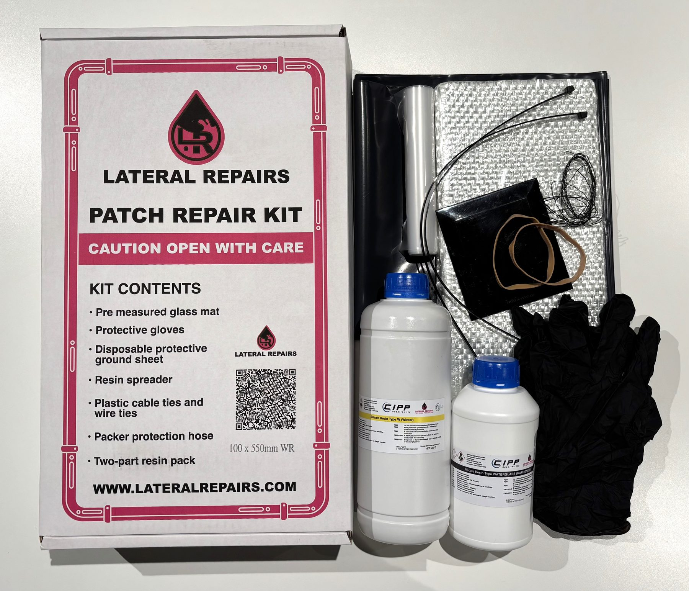
Spot repairsPatch Repair KitA boxed, pre-measured kit containing everything needed for one patch repair — glass mat, two-part resin, tools and protection.View detailsReinforcement1 PDFGlassfiber Complex 1050A two-layer stitched complex — chopped strand mat backed by woven roving — used where the finished laminate has to carry structural load.View detailsAncillary1 PDFEnd Cap GlueA contact adhesive that bonds on contact and reaches full strength in about two days — suited to rubber, leather, gasket, sheet, moulding, metal and lining materials.View detailsEvery liner is engineered, manufactured and quality-checked at our own facility — giving contractors consistent, traceable products they can install with confidence.
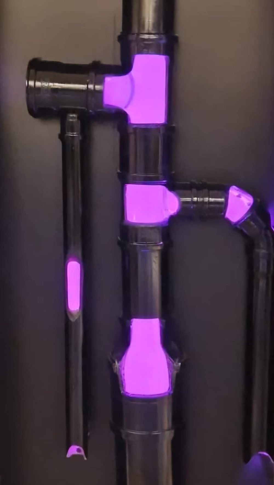
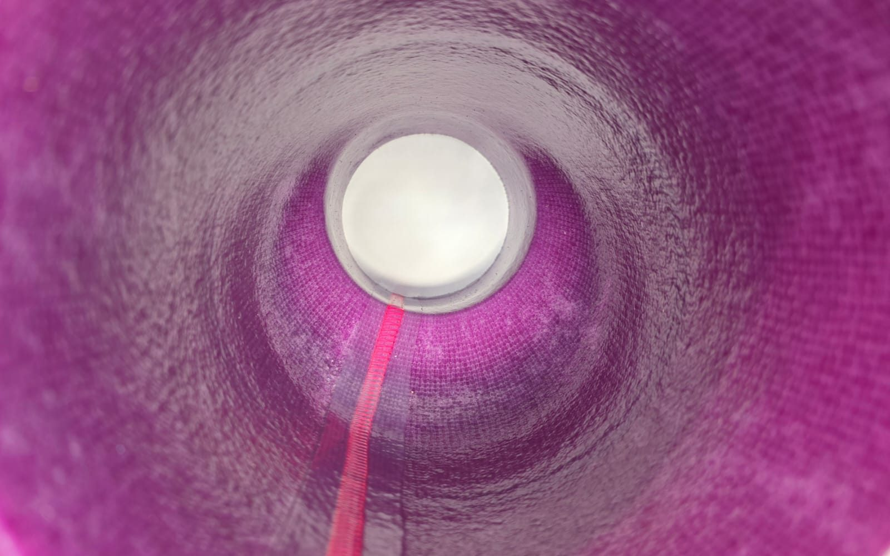
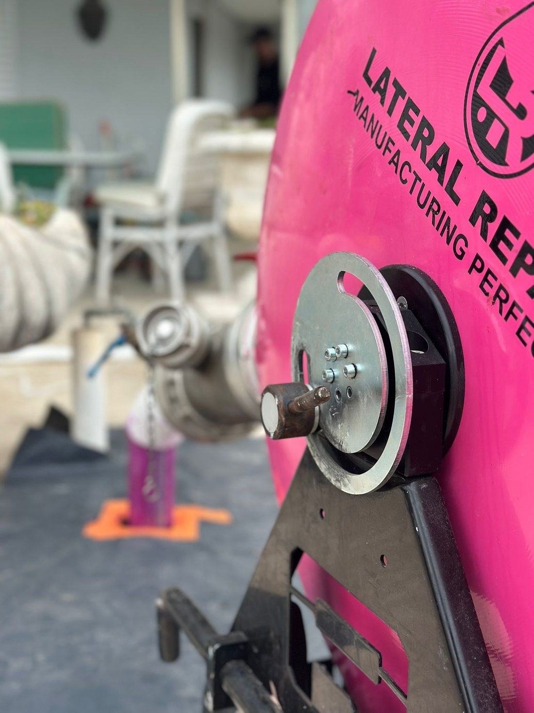
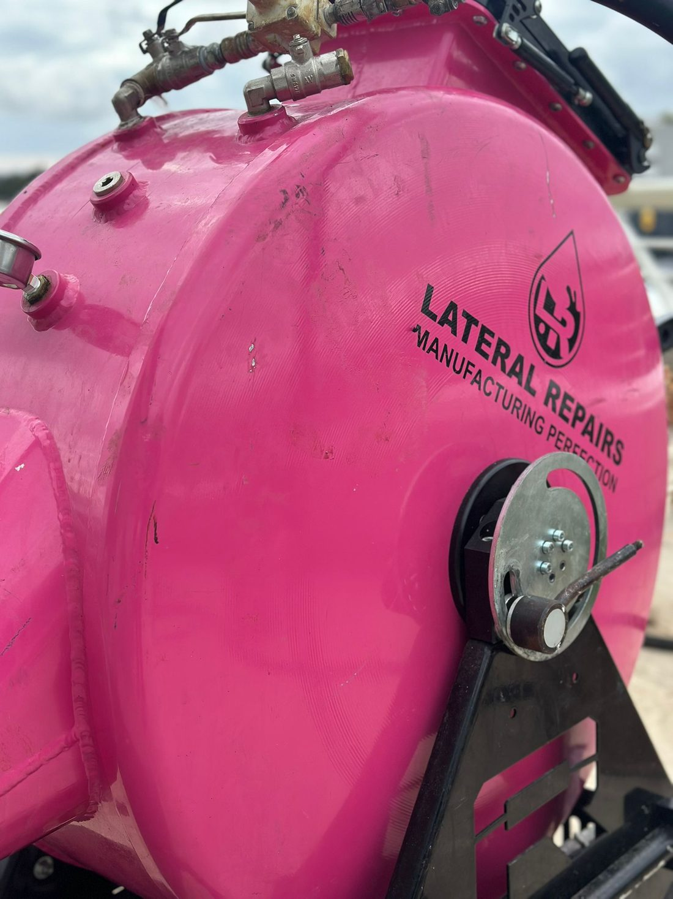
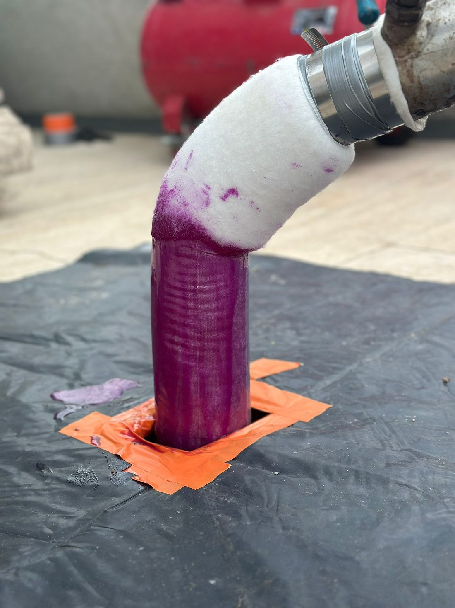
A look at Lateral Repairs — our people, our products and the trenchless technology rebuilding pipelines around the world.
European specialist technology companies have joined forces to create a leading integrated platform in the trenchless pipe rehabilitation sector — a true partnership between founders and financial partner Apheon. Lateral Repairs Managing Director Drew Holland joins the shareholding of the group, bringing our CIPP liner manufacturing into a platform that covers the entire no-dig value chain: robots, liners, resins, tools and curing systems.
Sewer rehabilitation robots, milling systems and cutter technology — the robotic backbone of the group.
ims-robotics.deGerman manufacturer of CIPP liner systems for trenchless sewer rehabilitation — a founding pillar of the platform.
polypipe.de40+ years of liners for pressure pipe rehabilitation plus repair seals for pressure and non-pressure pipes.
amex-sanivar.com20+ years developing and manufacturing high-performance synthetic resins for durable pipe repair.
resinnovation.comHigh-quality diamond milling and cutting tools for pipeline renovation robots — made in Germany.
kardiam.euTurnkey liner curing systems — steam units, inversion and impregnation equipment, custom vehicle fit-outs.
hurricane-tt.deTogether with 11 further affiliated companies, the platform covers the full trenchless value chain across Europe and beyond — backed by financial partner Apheon.
Our liners and resins are backed by international quality, technical and environmental approvals — with full technical data sheets available on request.
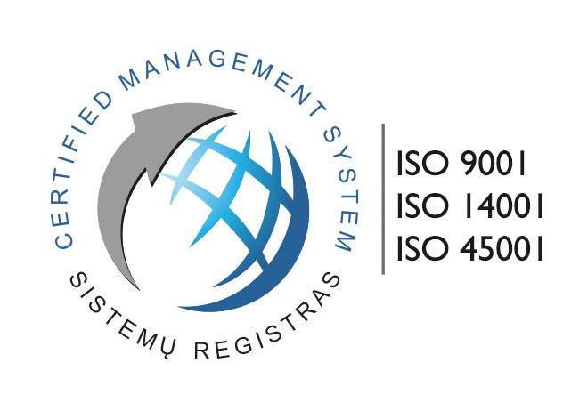
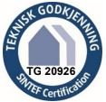
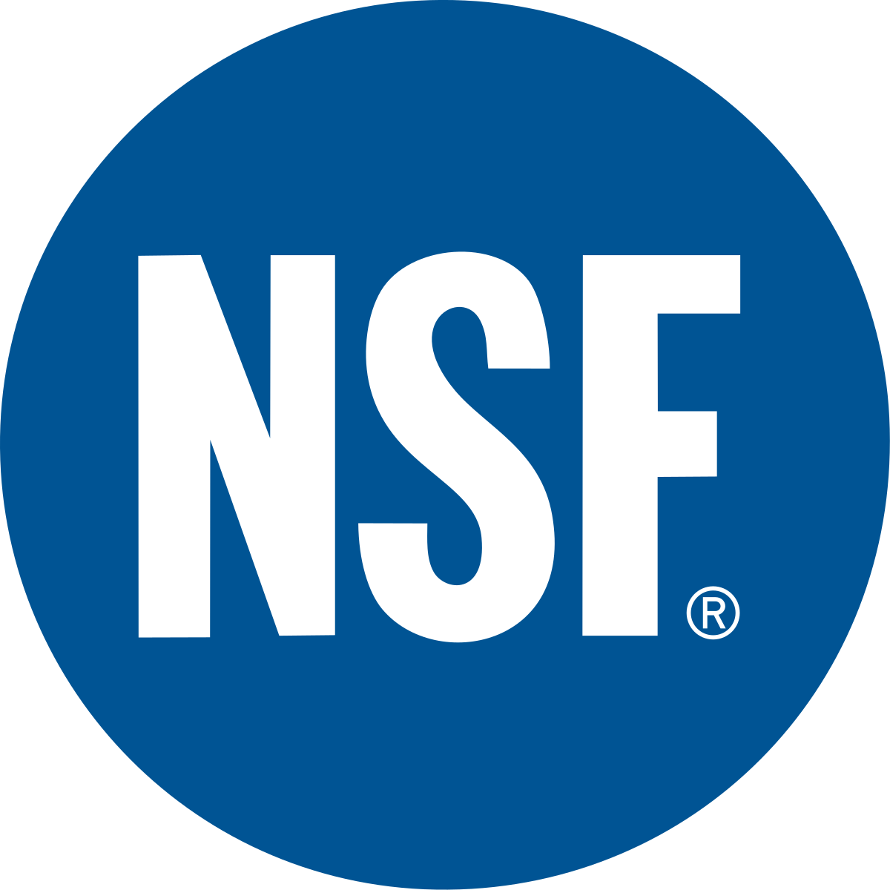
The free Lateral Repairs app puts our technical toolkit in the hands of every installer — calculate your resin mix and read product datasheets, all in one place.
Tell us about your project — diameter, length and application — and our technical team will recommend the right liner and resin system.